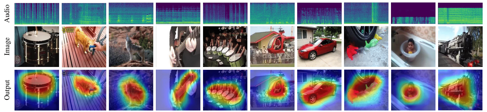

We present a simple yet effective self-supervised framework for audio-visual representation learning, to localize the sound source in videos. To understand what enables to learn useful representations, we systematically investigate the effects of data augmentations, and reveal that (1) composition of data augmentations plays a critical role, i.e. explicitly encouraging the audio-visual representations to be invariant to various transformations (transformation invariance); (2) enforcing geometric consistency substantially improves the quality of learned representations, i.e. the detected sound source should follow the same transformation applied on input video frames (transformation equivariance). Extensive experiments demonstrate that our model significantly outperforms previous methods on two sound localization benchmarks, namely, Flickr-SoundNet and VGG-Sound. Additionally, we also evaluate audio retrieval and cross-modal retrieval tasks. In both cases, our self-supervised models demonstrate superior retrieval performances, even competitive with the supervised approach in audio retrieval. This reveals the proposed framework learns strong multi-modal representations that are beneficial to sound localisation and generalization to further applications.
Data Transformations
With the proposed framework, we investigate the effects of correspondence invariance and geometrical transfomation equivariance properties of following augmentations:
Visualizations of Visual Sound Source Localisation
Image Visualization

Video demos
Visualizations of Retrieval
(i) Audio retrieval
1. Query audio
EXPAND
Retrieved audios
EXPAND
EXPAND
EXPAND
EXPAND
EXPAND
2. Query audio
EXPAND
Retrieved audios
EXPAND
EXPAND
EXPAND
EXPAND
EXPAND
(ii) Audio-image cross-modal retrieval
1. Query audio
EXPAND
Retrieved images
2. Query audio
EXPAND
Retrieved images
3. Query audio
EXPAND
Retrieved images
Quantitative Results
R1: Visual sound source localisation
Compare with current methods on Flickr-SoundNet and VGGSound datasets.
On both subset of Flickr-SoundNet, our proposed method outperforms current methods.
On VGGSound dataset, our proposed method outperforms current SOTAs by a significant margin.
Open set setting on VGG-Sound dataset.
Both approaches have experienced performance drop on unheard categories. However, our proposed model still maintains high localisation accuracy in this open set evaluation.
R2: Analysis of data transfomations
We perform the ablation study to show the usefulness of the data transfomations and the equivariance regularisation in the proposed framework.
R3: Audio retrieval and cross-modal retrieval
Audio retrieval for novel classes in VGGSound dataset.
Our model trained on sound source localisation task has learnt powerful representations, which demonstrates strong retrieval performance comparable to supervised baseline (VGG-H).
Audio-image cross-modal retrieval on VGGSound dataset.
Our model shows strong cross-modal retrieval performances which surpasses baseline models by a large margin.